Школьный музей МОУ СОШ №9 имени В. Т. Степанченко
города Ржева Тверской области
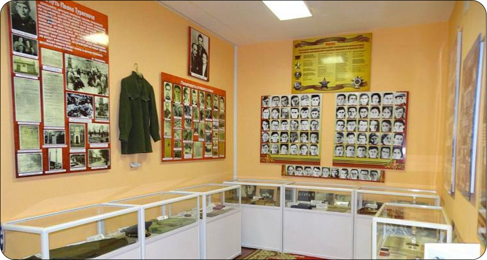
О НАС
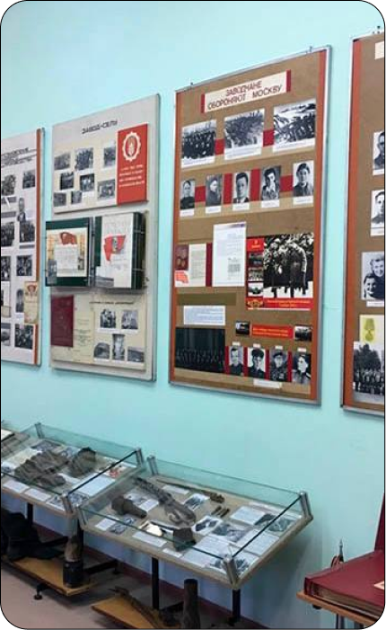
Тверской государственный объединённый музей (ТГОМ) является крупнейшим в России музейным объединением, в составе которого 31 филиал в 19 районах Тверской области. Методическим центром объединения служит Тверской краеведческий музей. В фондах ТГОМ находится более 955 000 единиц хранения.
ТГОМ ведет активную работу по многим направлениям. Выставочные проекты музея были представлены во многих городах России и за её пределами. Среди ученых большой популярность пользуются научные археологические семинары музея «Тверская земля и сопредельные территории в древности».
СОБЫТИЯ
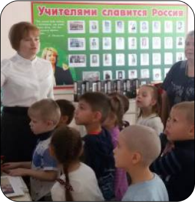
Экскурсия по школьному музею 2 классов 11.11.22
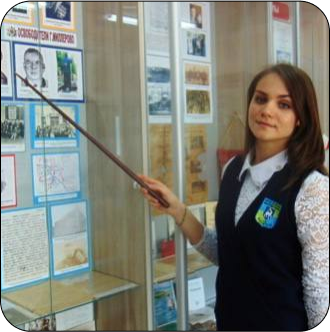
Помощь музея в защите проектов учеников 04.09.22
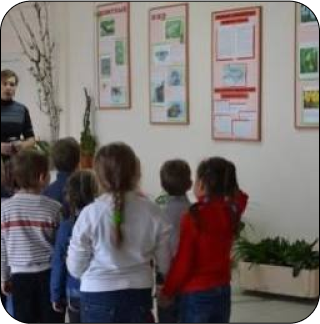
День школьного музея 01.03.22
ЭКСПОНАТЫ
Выпускники МОУ СОШ № 9 имени В.Т. Степанченко
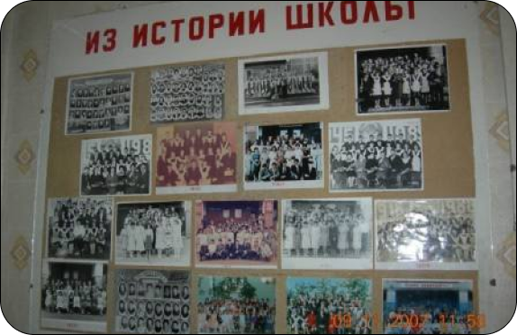
В школьном музее хранится информация о выпусках учеников, обучающихся в нашей школе. К каждому выпуску прилагается альбом и множество фотографий, которые вы сможете увидеть своими глазами.
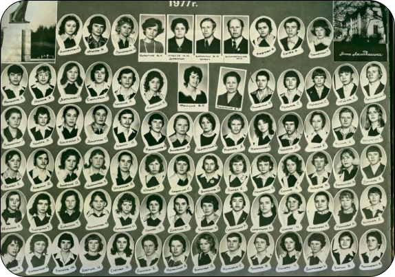
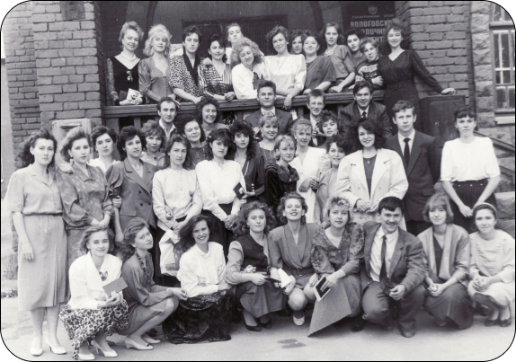
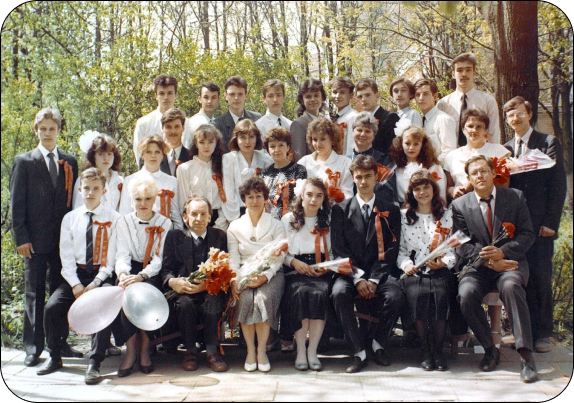
Выпуск 2004 года.
Классный руководитель : А.М. Александрова.
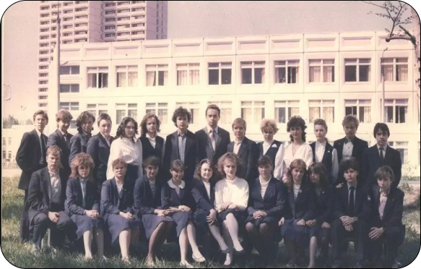
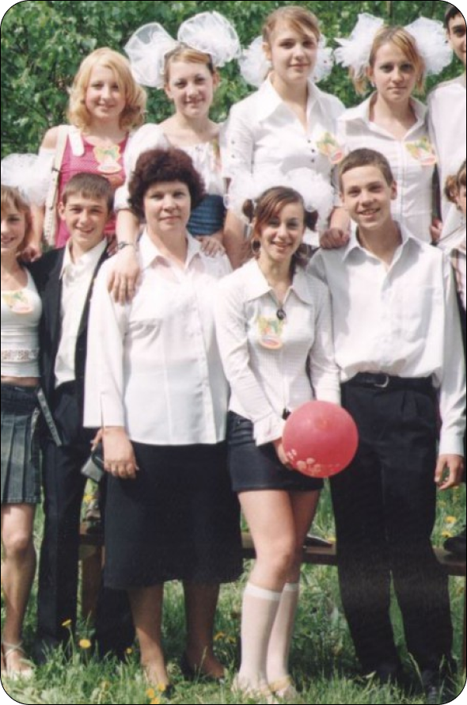
Выпуск 2013 года. Классный руководитель: С.Е. Иванова
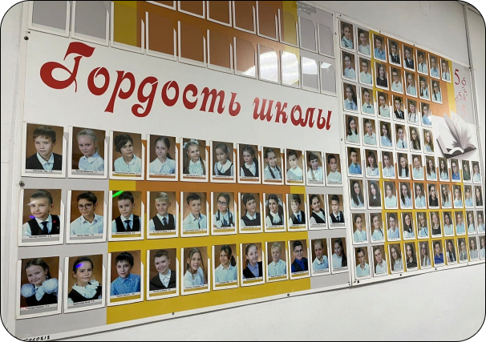
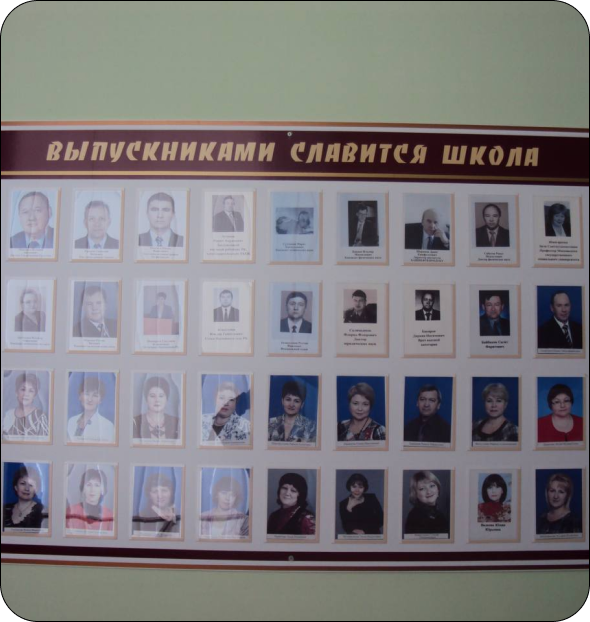
Каждый из выпусков особенно уникален и интересен своей историей. Наш музей собирает информацию о выпусках с 1988 года, поэтому их огромное количество. Чтобы увидеть больше, вы можете посетить музей МОУ СОШ №9 имени В.Т. Степанченко
Творческая деятельность наших учеников
Ученики нашей школы часто радуют музей своими замечательными поделками, которые вскоре служат воспоминанием и экспонатом.